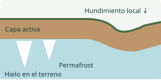
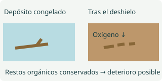
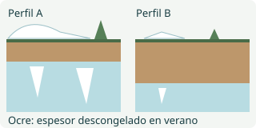
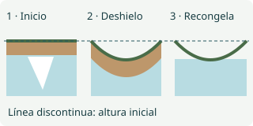
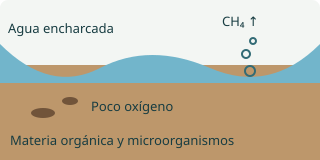

← Indicadores del cambio climático
¿Está cambiando el permafrost?
Los sondeos en profundidad muestran que el permafrost se está calentando.
El permafrost es terreno que permanece a 0 °C o menos durante al menos dos años consecutivos. Puede calentarse y seguir congelado. Cuando se funde el hielo que contiene, también puede cambiar el paisaje.
Evidencia y límites
Los investigadores midieron en profundidad, donde la oscilación de las estaciones apenas se percibe. El promedio resume los puntos de la red durante esa década. La evolución local depende de la profundidad y de las condiciones del terreno. Estudio global de 2019.
En las montañas europeas también se han comparado registros a distintas profundidades hasta 2022. Estudio regional de 2024.
Dos capas, dos ritmos

La capa activa se descongela cada verano. Debajo puede quedar hielo durante años. Perfil conceptual sin escala.
¿Por qué puede hundirse la superficie?
Si se funde hielo abundante en el subsuelo, el terreno pierde volumen. Algunas depresiones acumulan agua y forman lagunas. Ese relieve irregular se llama termokarst.
¿Dónde se encuentra?
Hay permafrost en regiones árticas, subárticas y de alta montaña. Dentro de una misma región, puede aparecer de forma continua o en zonas aisladas.

Para 2000–2016, un modelo del hemisferio norte estimó 20,8 millones de km² de región con presencia de permafrost. Dentro de ella, estimó 13,9 millones de km² de terreno con permafrost.
El carbono que guarda el terreno
1.460–1.600 Gt C
Estimación del IPCC para el carbono orgánico de los suelos de la región circumpolar septentrional de permafrost, incluidos depósitos superficiales y profundos. Una gigatonelada de carbono equivale a mil millones de toneladas de carbono.
El IPCC comparó esta reserva en 2019 con casi dos veces el carbono de la atmósfera. La fracción que puede liberarse depende del deshielo y de la descomposición de la materia orgánica.
Cómo se refuerza el calentamiento
- El terreno absorbe calor y aumenta su temperatura.
- Al descongelarse el terreno queda materia orgánica disponible.
- Los microorganismos descomponen materia orgánica y liberan CO₂. Donde escasea el oxígeno también puede formarse metano.
- Los gases que llegan a la atmósfera contribuyen a un calentamiento adicional.
↺ El calentamiento adicional vuelve a influir en el terreno.
Una superficie, dos escenarios
Reducción proyectada de la superficie de permafrost cercano a la superficie hacia 2100 respecto a 1986–2005.

La curva azul indica una pérdida del 24 % (±16 puntos porcentuales) bajo RCP2.6. La roja indica un 69 % (±20 puntos) bajo RCP8.5. Las bandas muestran la dispersión de las proyecciones.
IPCC · Proyecciones SROCC, página 13 del PDF¿Qué cambia para quienes viven allí?
Donde se derrite hielo del subsuelo, el terreno puede hundirse de forma desigual. Ese hundimiento, llamado subsidencia, puede deformar carreteras y cimientos. Si cambia el drenaje, algunas depresiones se llenan de agua y otras se vacían.
Patrimonio en Qajaa

En Qajaa, Groenlandia, el terreno congelado ha conservado restos arqueológicos orgánicos durante milenios. El deshielo, la erosión y la exposición al oxígeno pueden acelerar su deterioro. En el estudio, el consumo de oxígeno en muestras ayuda a evaluar la actividad de descomposición. Estudio del yacimiento de Qajaa.
¿Se descongelará por igual en todas partes?

La respuesta depende del clima local, la nieve, la vegetación y la cantidad de hielo. Un incendio puede eliminar parte de la cubierta que aísla el suelo.
¿Qué ocurre si el terreno vuelve a congelarse?

El agua puede volver a helarse. Una depresión o un cambio de drenaje causados por el deshielo pueden persistir.
¿Cuándo puede formarse metano?

En un terreno encharcado puede escasear el oxígeno. En esas condiciones, algunos microorganismos producen metano al descomponer materia orgánica.
Explorar el permafrost
Permafrost Ground Temperature
↳ 2 m depth
↳ Timeseries (T2m)